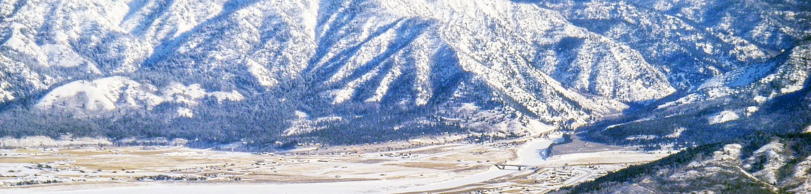

Alpine Trail Guide

Welcome to Alpine! We are home to beautiful hikes, lots of wildlife, and awesome views. The Alpine Trail Guide is dedicated to helping you explore Alpine's wonders. Find local hikes that fit your schedule and suit your needs, all in one place.